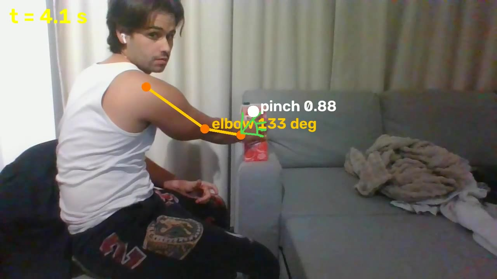

Record
An operator does the task once, at normal speed, in front of an ordinary webcam. No markers, gloves or special suit are needed for the first version.
- One take is enough for simple pick-and-place
- The person who does the job every day is the teacher
